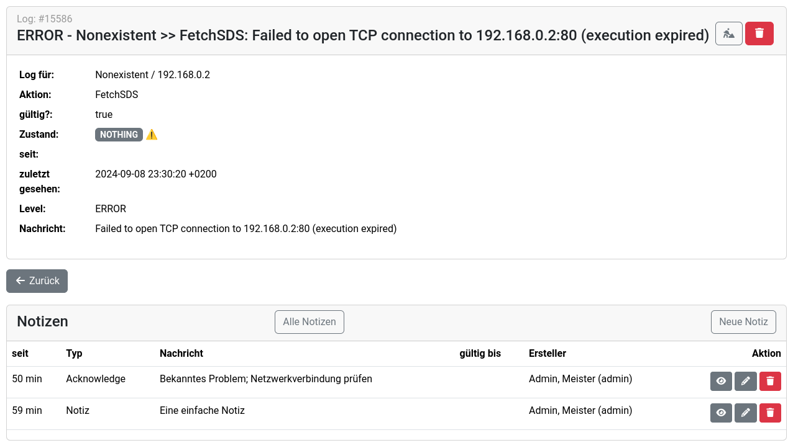

Acknowledges
Acknowledges sind eine Form von Notizen, die Übersicht im Dashboard schaffen. Einträge mit Acknowledge werden in der Standard-Ansicht herausgefiltert und müssen explizit über den Button Acknowledged eingeblendet werden.
Sind die notwendigen Rechte vorhanden, wird der Acknowledge-Button angezeigt:
Mit Klick auf den Button erscheint ein modales Fenster. Das Feld Nachricht ist verpflichtend, die Angabe von gültig bis ist optional. Damit lässt sich die Dauer des Acknowledges begrenzen. In jedem Falle wird wird das Acknowledge automatisch abterminiert, sobald der Grund für den Logeintrag entfällt.
Nach dem erfolgreichen Acknowledge ändert sich die Anzeige des Acknowledge-Buttons:
Die Bearbeitung von Acknowledges und Notizen ist über die Ansicht zum jeweiligen Objekt möglich (hier: Logeintrag).
